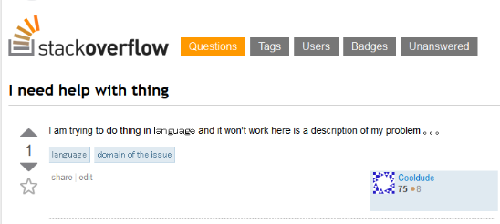

Did you ever have an instructor say the phrase “there are no stupid questions so don’t be afraid to ask”? Everytime I heard that phrase I would instantly think of a question that may or may not be considered stupid. I feel that there are no stupid questions, however the way you ask a specific question can come across as stupid. The general approach of “why does my code not work?” is such a general question that may lead to others not answering it. Before you ask your question, you need to know the basics behind your problem. The goal, the approach or the guidelines of your problem must be specified or else someone may give you an answer for the wrong direction. Understanding how to ask questions is essential for every software engineer as tons of problems are bound to pop up. Knowing how to ask for help can easily improve your skills as a programmer.
Looking at a website called StackOverflow, we can see multiple types of programming questions asked. Questions range from basic methods all the way to creating applications and complex code. To start, when asking for help you want to make sure that you haven’t reposted a question that has been asked millions of times. Make sure to try and look up a potential solution on the web before you turn to asking a question that may have been asked already. Before asking, be sure to hink about the type of answer you hope to receive. The wording of the question can specify the type of thing you are looking for. Instead of asking “How can I fix my code?”, instead try to ask “In the main function, I am receiving an error reffering to line x. I have tried…”. Being very specific and providing the context of the situation can help the people trying to solve your problem. The more information your provide with your question, the easier it will be for you to get the answer you are looking for.
A simple example can be seen here where someone just wants to know what “–>” does in C++.
What is the "-->" operator in C++?
After reading Hidden Features and Dark Corners of C++/STL on comp.lang.c++.moderated, I was completely surprised that the following snippet compiled and worked in both Visual Studio 2008 and G++ 4.4.
Here's the code:
#include <stdio.h>
int main()
{
int x = 10;
while (x --> 0) // x goes to 0
{
printf("%d ", x);
}
}
Output:
9 8 7 6 5 4 3 2 1 0
I'd assume this is C, since it works in GCC as well. Where is this defined in the standard, and where has it come from?
Despite being such a simple question where the user could have asked the question straight up, they provide context where that specific operator is being used along with sample output and specifying the code language. We can see by providing more details, it made it easier for others to understand the questions and deliver an adequate answer.
StackOverflow does a decent job at deleting or filtering out questions that are considered “bad”, so it is a lot rarer to find those types of questions. However, there are still lots of websites that have screenshotted or remember the horrific questions asked. Here is one of those examples.
here is my website: http://www.bbcsport-football.com/football
I want to fetch array news descending by most vieweed, but it doesn't work for new news. This football website is very important for me so please any kind of help would be appreciated by me.
sorry for my bad english.
Taking a first glimpse at this, we can see there is tons of information missing here. The user probably does not speak english as their first language, but that is no excuse to not provide any details behind the code. The user basically provides a link and asks how to implement some feature without the source code or background informatiom. Based off the link, we can assume that this may not even be their website. This is a question that can be interpreted in multiple ways, some may provide an example of code to implement. Other may explain how to do it through words through some random coding language. Unless you want to be banned by StackOverflow, refrain from asking these broad and open questions.
As developers, we can not be expected to know everything. Asking for help is always encouraged but asking the right way makes the process easier for everyone. By asking the smart way, we can all get the answers we were looking for.